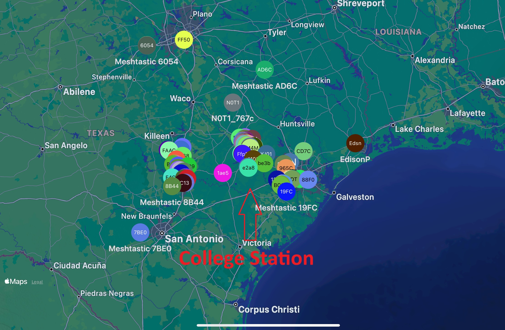
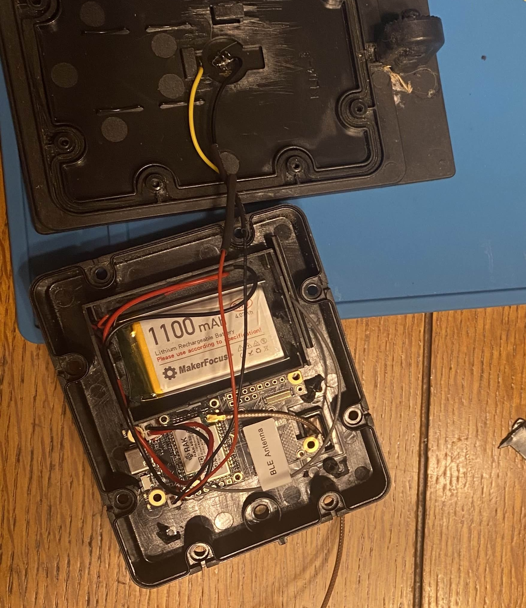

Mesh Repeater
1/23/2025

Last summer, I was opened up to the world of Meshtastic.
Meshtastic is a low power long ranged communication standard that uses the LoRa modulation scheme to send text messages. What separates this apart from other communication standards is its decentralized Mesh Network configuration that allows individuals to expand the network. Mesh networking can allow for cheap and quick setup of small networks to allow for communication between the nodes that make up the network. This can be useful, especially in emergecy situaitons where services like cellular serivce is taken down. It can also be a cheap way to send small amounts of information. Many also have fun just trying to expand the network and see who they can reach. The mesh here in college station is able to reach both Austin and Houston
Meshtastic is a low power long ranged communication standard that uses the LoRa modulation scheme to send text messages. What separates this apart from other communication standards is its decentralized Mesh Network configuration that allows individuals to expand the network. Mesh networking can allow for cheap and quick setup of small networks to allow for communication between the nodes that make up the network. This can be useful, especially in emergecy situaitons where services like cellular serivce is taken down. It can also be a cheap way to send small amounts of information. Many also have fun just trying to expand the network and see who they can reach. The mesh here in college station is able to reach both Austin and Houston

I wanted to be able to reach the network myself, but it was really hard to from where I am, so I needed to build what is called a "repeater".
LoRa radios can go a far distance, but only in the right conditions. The biggest factor in how far you can communicate is height. So, that means my radio is able to reach the network just fine, it just needs to be higher. But I don't want to climb on my roof everytime I want use the network.
To build the repeater to allow me to easily gain access to the network, I used a Wisblock Meshtastic starter kit, a big fiberglass antenna made to work with the LoRa technology (this is to get me a bit more of a range boost), a 1100Wh battery, and a old solar light.
LoRa radios can go a far distance, but only in the right conditions. The biggest factor in how far you can communicate is height. So, that means my radio is able to reach the network just fine, it just needs to be higher. But I don't want to climb on my roof everytime I want use the network.
To build the repeater to allow me to easily gain access to the network, I used a Wisblock Meshtastic starter kit, a big fiberglass antenna made to work with the LoRa technology (this is to get me a bit more of a range boost), a 1100Wh battery, and a old solar light.

Once I assembled it and gave it a waterproof coating, I put onto of the roof.
Once installed, I was able to reach the mesh network with ease.
The repeater I made has been running continuously since August, with the battery barrely going under 90% charge.